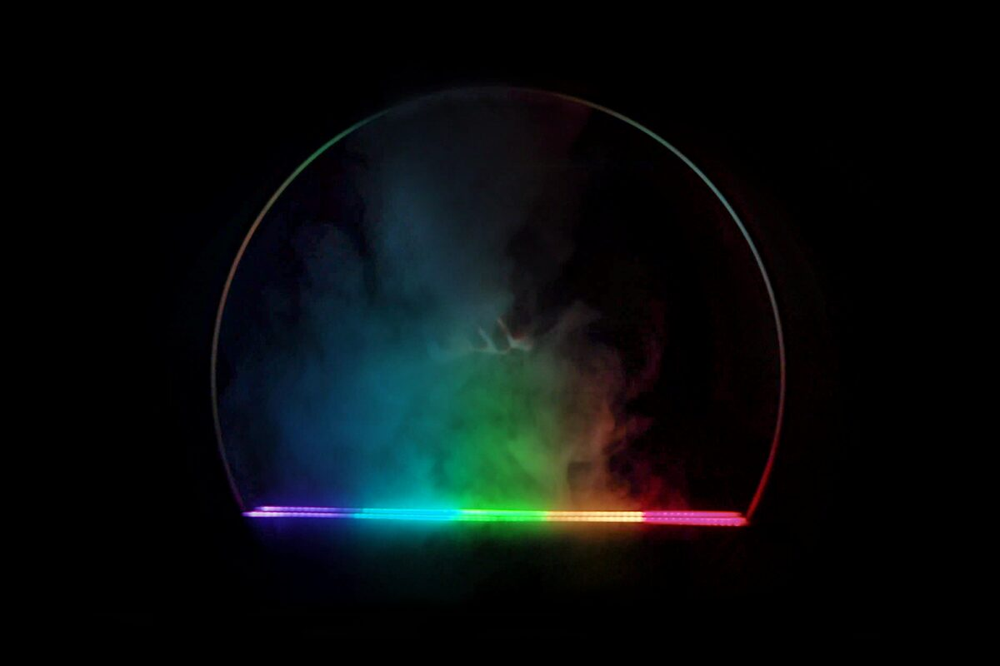
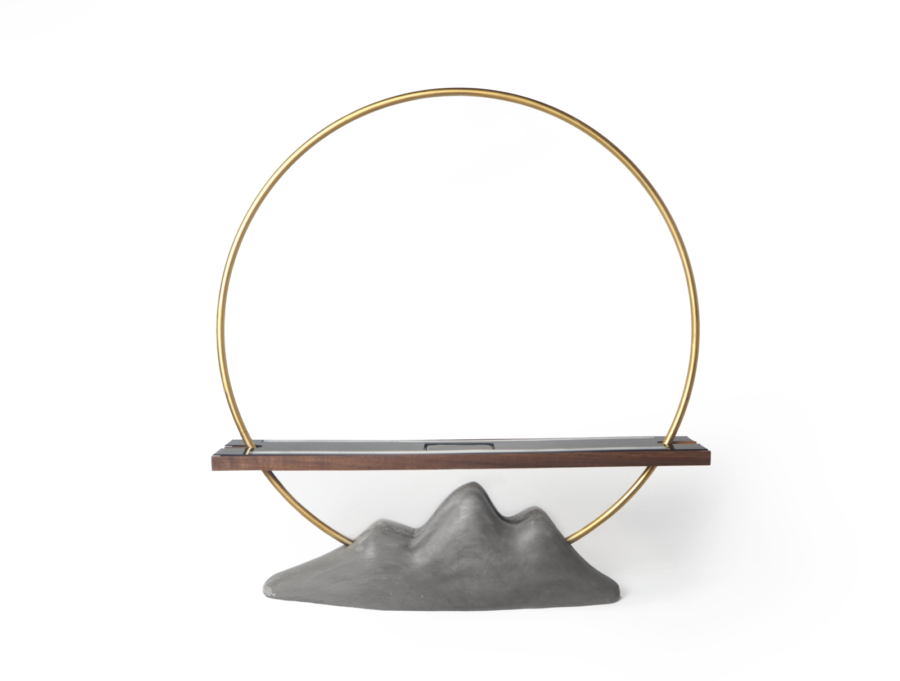
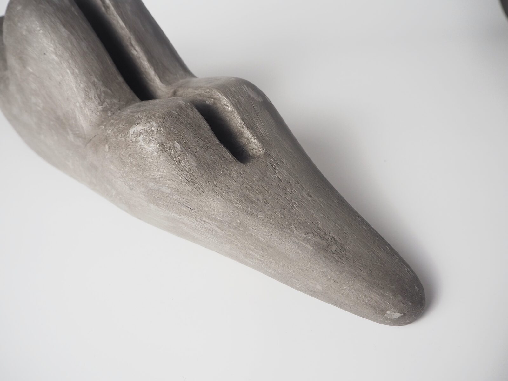
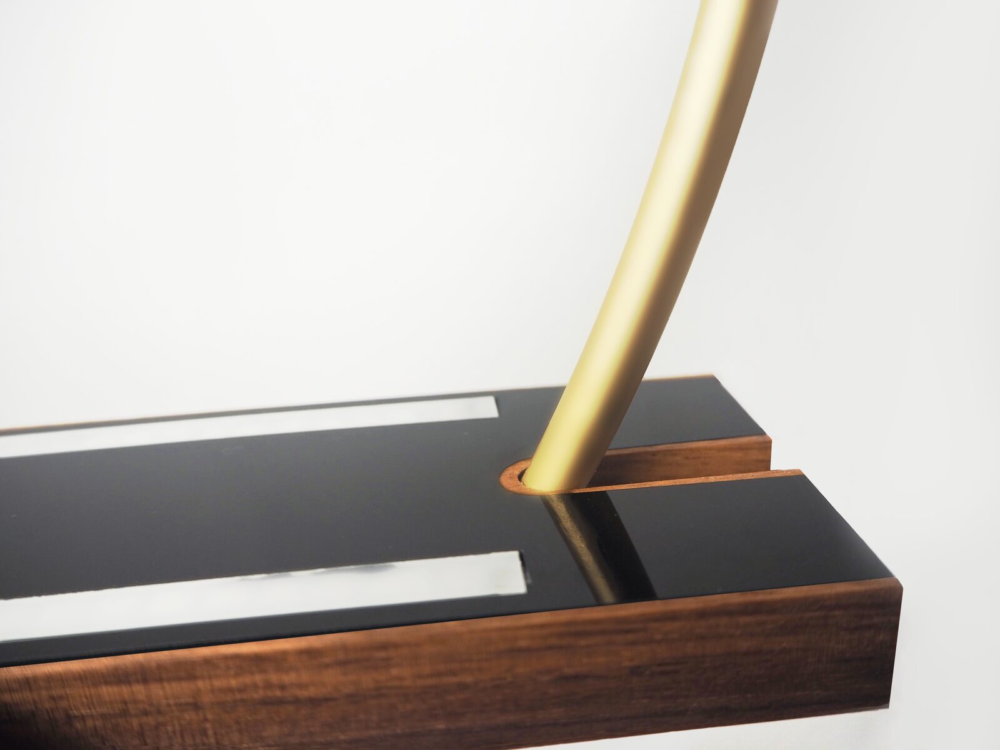
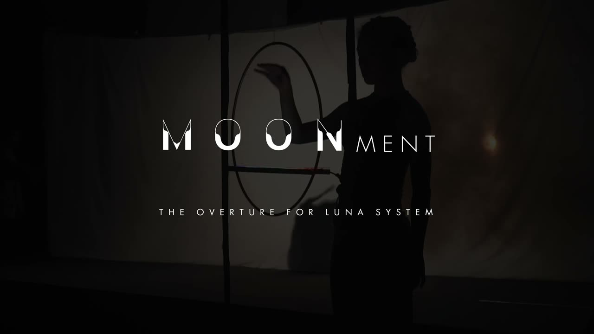

Moonment
1. PubPub Link
https://nime.pubpub.org/pub/9598r1dn/draft?access=du502zbn
2. ABSTRACT
MOONMENT is made up of a 60cm diameter brass ring and a 60cm long wooden structure with an acrylic panel and black walnut shell, with a Leap motion gesture sensor embedded in the middle and two LED strips on both side of the gesture sensor. When the MOONMENT is located with pedestal, it is equipped with a concrete mountain-shaped base.
The gesture sensor uses Leap Motion, and the software that connects gestures, music, and lights are Max/msp, Ableton Live, Arduino.
Inspiration
The same universe and the same moon, but in different regions and cultures, the moon can be seen so differently, and this gave birth to the idea of incorporating the concept of the moon's brightness, which is both warm and elegant, and unpredictable and crazy, into the design of Moonment.
I. Express emotion
The change of human emotions is so similar to the change of the moon, and it seems to be a characteristic of human beings that they like to put their emotions on other things. Therefore, it seems that people's sadness and happiness, the moon's cloudy and sunny days, music and light have the same characteristic of "changing emotions".
II. Gesture Interaction & Aleatory music & Acousto-optic interaction system
Applying this conceptualization to Moonment, it means that Moonment is just like the moon, through which people can express the opposite emotions of warmth or coldness.
The music played by different people through Moonment is also very different, and even the same person may not be able to play the exact same melody through Moonment in his or her lifetime, but every Moonment performance is unique and a surprise for the participants.
Interaction
I. Emotion - Front and back - Hue
Emotion is determined by a combination of tonality, timbre, and reverberation, and is divided into a cold and warm zone according to proximity, with a transition zone in the middle, the midrange.
When the participant's hand moves in the middle section, the output music is neutral in mood and the light color is biased towards the original color, when the participant's hand moves forward, the output music shifts to a sad mood and the light color becomes more and more biased towards the cool color and vice versa.
II. Constitute - Left and right - Color
When the participant's hand is in the area of the light color, it triggers the composition of the music corresponding to the light color.If the participant's hand makes a reciprocating motion across multiple light-colored segments, the constituent parts of these segments are triggered to output music simultaneously.
III. Range - Up and down - Brightness
For example, when the participant's hand moves in a downward direction, the pitch of theI output music becomes lower and the brightness of the light color becomes dimmer.
The speed at which the participant's hands move up and down determines the speed of the random output of the notes, which in turn determines the speed of the music.
（For a more detailed description, please download this file.）
3. PROGRAM NOTES
Everyone can play the piano, guitar, etc.
Why can't you play light?
So let's make light an instrument that can be played.
Gesture interaction is the core of music control, with lighting changes, to bring a unique auditory and visual experience.
It is a new type of musical instrument playing interaction system that combines accidental music and lighting art. The main purpose is to design a system based on sound and light interaction technology and incidental music that allows participants with no musical foundation to play instruments in line with mainstream musical aesthetics.
4. REQUIREMENTS
Equipment
Computer with MacOS system installed.
Max/msp 8, Ableton live 10, Arduino installed.
At least two USB ports.
Preferably configurable with speakers.
Space
Environmental requirements
dark room, dark environment
need to build an environment where the Tyndall effect can occur, usually
using a fogger or smoke generator.
Placement conditions
Can be hung or placed on the table (with base).
Performer(s)
Anyone, as long as he has played at least fifteen minutes.
Feasibility
5. MEDIA
Photos


User Scenarios


Overall display


Pedestal


Details
Video

▶Moonment
6. ACKNOWLEDGEMENTS
Thanks to Professor Jiang Wen (Guangdong University of Technology) and Associate Professor Lin Chang (Xinghai Conservatory of Music) for their teaching in this work.